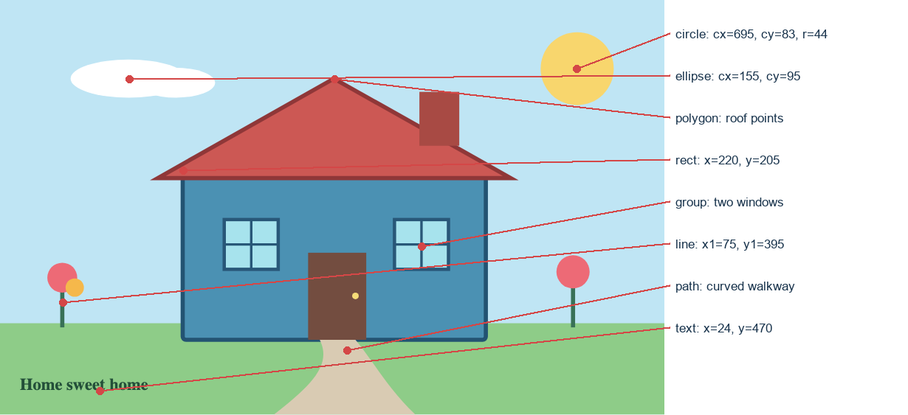

House and garden
The two windows inherit one .window style and use translate() for their positions.
A house and garden built from SVG primitives. Inspect the image with Developer Tools to see the coordinates, shared window group and transforms.
The two windows inherit one .window style and use translate() for their positions.
This annotated image starts with a browser screenshot of the SVG and marks the coordinates of each primitive.

Open browser Developer Tools, select #house-target svg, then expand the two <g> window children. Take a screenshot of your own browser for the required submission evidence.
<g class="window">
<g transform="translate(270 265)">…</g>
<g transform="translate(475 265)">…</g>
</g>